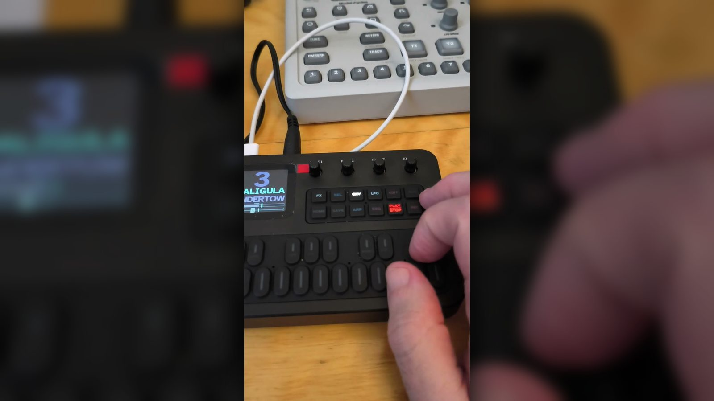

A firmware for the M-VAVE FM-1 for electroacoustic experimentation, live ambient music and sound exploration

Features
- Six tracks
- Each with its own engine, sound, octave, level and pan.
- Voices
- Twelve voices shared by all tracks: each track takes as many as its notes need.
- Seven engines
- FM, ANIMA, CALIGULA, RUSSOLO, DRUID, BAYAREA and HIVE, chosen per track (described below).
- Sound generation
- HOME generates a new sound for the track from the engine's families of sounds.
- Generative paths
- Per track, new sounds can be biased towards ambient (darker, slower) or experimental (noisier, harder).
- Macros
- With EDIT on, the four knobs adjust four engine-specific parameters of the current sound.
- Envelope
- Per track, the sound's amplitude envelope shown as attack, decay, sustain and release, and set with the four knobs.
- Copy and paste
- Holding a track's button copies its sound and loops; holding another's pastes them there.
- Loopers
- One per track, up to ten overdubs, each with its own length; each can be switched in and out. Per track: played forwards, in reverse, forwards and backwards alternately or in a random note order, at half, normal or double speed; transposed by steps of the scale (per track and all together).
- BALLSY
- A physics sequencer per track: one to eight balls bounce in a box; each wall hit plays a note of the scale, one octave per wall, with a random level and length. Knobs set the number of balls, their speed, the octaves and how unsteady their motion is.
- BRICKLAYER
- A step sequencer per track, built a note at a time: the notes spread evenly over up to 32 steps, with rate, harmony and variation controls, and the loops' direction and speed keys.
- PLAY
- On a sequencer's page PLAY starts and stops the sequencer (blinking while it plays); on every other page it starts and stops the track's loops (lit steadily). Loops can be recorded over a sequencer.
- One way per track
- Each track is played by its looper, BALLSY or BRICKLAYER, one at a time. PLAY starts and stops whichever is in use, from any page.
- Varied loops
- Per track, the loops can play each note at a random level and for a random length, and now and then change or add notes: echoes, harmonies, octave jumps, notes that were not recorded, grace notes, ratchets, strummed chords, drops and slight lateness, all in the scale; and their pace can undulate, halt, burst and swoop.
- Latching
- Notes held when SHIFT is pressed keep sounding after the keys are released.
- Filter, grains, crush
- A resonant low/high-pass filter, a granulator and a bit-depth and sample-rate reducer on every track.
- Distortion
- On every track, before the delay and reverb: two gain stages with odd and even harmonics, the output level matched to the dry signal.
- Delay
- A master delay (up to 2 s) before the reverb, with a send from every track.
- Reverb
- A plate reverb (Dattorro) with a send from every track.
- Scales
- The white keys play a scale from any root.
- Presets
- 64 per engine; a stored sound can be loaded on any track.
- Sessions
- 64 slots holding every track, sound, loop, latched note and setting, the reverb included.
- Low vision
- Few words, very large type, high contrast, a colour per track.
Engines
FM
Six-operator frequency modulation in the style of the DX7, built on msfa (the core of Dexed): 32 algorithms, four-rate, four-level envelopes, operators on frequency ratios or fixed frequencies, operator feedback, an LFO and a pitch envelope. HOME generates a patch from one of twenty-two families, among them bells and gongs on inharmonic ratios, slowly beating drones, feedback noise, struck sounds with a falling pitch, sounds pulsed by the LFO, glissandi, formant vowels, odd-harmonic tones, ring-modulated bands, plucked strings, struck bars, and stranger ones: free ratios with a wandering pitch, sample-and-hold steps, bouncing pitch envelopes. Each patch is rendered once when it is generated and its level adjusted to a common loudness. Polyphonic, from the shared pool of voices.
Macros: BRIGHTNESS (modulation index), DETUNE or INHARMONIC (carriers and modulators detuned, or operators moved off their ratios), SATURATION (feedback and saturation, or a low-pass), MOTION (LFO depth and a tremolo).
ANIMA
A lo-fi engine: each voice is computed at half the sample rate (22.05 kHz, nothing above 11 kHz) and drawn out to the full rate by straight lines. A fixed-point port of the anima opcode from Vascular. A voice has two wavetable oscillators (24 single-cycle tables), an FM pair, a stack of up to four transposed copies, a grain generator, filtered noise, a resonant state-variable filter and a tremolo, followed by a sample-rate reducer, a waveshaper, a four-stage phaser, a second filter and a comb resonator tuned to the note. While a key is held, a simulated finger moves over a virtual surface; its position, pressure, speed and the time it has been down are routed to the voice's parameters through a modulation matrix. The key sets the pitch; the movement changes timbre, level and the resonator. Twenty-two kinds of design, among them plucked strings, reeds, organs, crushed pulses, drifting saws, grain clouds and whistling resonances; polyphonic, from the shared pool of voices.
Macros: TONE (all filter cutoffs, four octaves either way, and the FM's brightness), a macro for the main element of the design (GRAINS, NOISE, FM, FORMANT or DRIVE), RESONATOR (from dry to long ringing), MOTION (from a nearly still hand to a quick one with a tremolo).
CALIGULA
Modelled on the architecture of the SOMA LYRA-8, after Miguel Moreno's LIRA-8. Eight oscillators in four pairs, each variable from triangle to square. Each pair is frequency-modulated by its partner, by the other pair on its side, by a pair on the other side or by the engine's own output (total feedback). Two LFOs combined into one modulation source change the modulation depth and can gate pairs on and off. Two short modulated delay lines, a drive stage and the total feedback follow. One voice per track: the key sets the note the eight oscillators are tuned around, in intervals chosen when the sound is generated. While a key is held, a simulated hand touches the eight oscillators' sensors, at irregular times or in repeated patterns, and the engine adds short bursts and occasional rises of feedback and drive. Ten kinds of design.
Macros: WAVEFORM (triangle to square), MOD DEPTH (modulation depth), FEEDBACK or DELAY (total feedback and drive, or the delay), TOUCHES or GATE RATE (how often the hand touches, or the speed of the gating).
RUSSOLO
Noise, logic operations and generated buffers, after the techniques of Robert Heel's Noisferatu. It runs at a third of the sample rate in 10-bit values, then reduces bits and holds samples further. Seventeen kinds in four groups: noise (sample-and-hold noise, random clicks through a low-pass, noise gated by two triangles, clicks ringing on short pitched decays); oscillators combined by NOR, XOR or multiplication, squares modulating squares, and triangles at an inharmonic ratio redrawn on a clock; a generated buffer of noise, saw and silent chunks, read at the key's speed, with random jumps, a wandering window, or its address bits forced, flipped or held; and tones fired by chance on the key's harmonics, a random walk over a scale, and slowly beating chords. The key opens an envelope and sets the pitch or read speed. One voice per track.
Macros: two parameters specific to the kind (for example RATIO and DRIFT, or DENSITY and CLOCK), CRUSH (bit depth and sample hold) and RANDOMNESS (how much chance drives it; above the middle it also stutters).
DRUID
Strings and resonant bodies: a fixed-point port of the resonators of Mutable Instruments Rings by Émilie Gillet. Three resonators: a Karplus-Strong string (Hermite-interpolated delay line, FIR and state-variable damping, dispersion that stretches the partials or, at low settings, makes the bridge buzz like a sitar's); sympathetic strings (a string and three more tuned to intervals of it, driven by its sound); and a modal resonator of up to 16 partials. As the FM-1 has no audio input, the resonators are excited internally: plucked (Rings' plucker), struck, bowed with noise while the key is held, or rattled by random impacts. Ten kinds: PLUCK, BOWED, STRUCK, SITAR, RATTLE, HARP, DRONE, BELL, BOWL, PLATE. Releasing a key damps the sound by an amount set per sound. Polyphonic, from the shared pool of voices.
Macros: Rings' four controls, STRUCTURE (dispersion, the sympathetic strings' intervals, or the spacing of the partials), BRIGHTNESS, DAMPING (from about 70 ms to 18 s, and no decay at the top) and POSITION (where it is excited and picked up).
BAYAREA
A West Coast voice, ported from the bayarea opcode of Vascular: an oscillator morphing from sine through triangle and square to saw, frequency-modulated through zero by two sines at ratios of it, a wavefolder, then a low-pass gate (a resonant filter and an amplifier struck together) or a sustaining envelope over two resonant low-passes, a saturating output and a bank of three resonators. An LFO moves the shape, folds, FM depths, the envelope and the filter peak by amounts drawn with each sound. Six kinds: BONGO, PLUCK, CHIME, FOLDED, SWELL, DRONE. Polyphonic, from the shared pool of voices.
Macros: SHAPE, FOLDS, FM (both modulators' depth) and DECAY.
HIVE
A swarm of oscillators, ported from the SWARMER machine of DigiRust and extended: per voice, seven oscillators, each placed at the note, an octave or fifth, a cluster step or an inharmonic partial, each with its own wave (sine, triangle, saw or square), level and LFO; slow noise on the pitches, noise, ring modulation, a 4-pole low-, band- or high-pass filter with its own envelope and LFO, an ADSR and a drive. Twelve kinds: SUB, LEAD, STAB, PAD, DRONE and WASH, and the inharmonic, textural CLUSTER, METAL, SPECTRA, GROUND, AIR and TIDES for non-melodic use. Polyphonic, from the shared pool of voices.
Macros: DETUNE, MOVEMENT (the LFOs' depth), MIX (swarm against main; NOISE on GROUND and AIR) and CUTOFF.
Install
The installer runs in a desktop Chrome, Edge or Opera and talks to the FM-1 over USB MIDI. Nothing to download, nothing uploaded.
- Connect the FM-1 with a USB data cable and switch it on.
- Open the installer, read the warning and allow MIDI access.
- Press Install and leave the FM-1 connected until it restarts into Tonitor.
Tonitor is unofficial. It is not made, endorsed or supported by M-VAVE, and installing it may void any warranty that applies to your FM-1. You install it at your own risk; see the disclaimer.